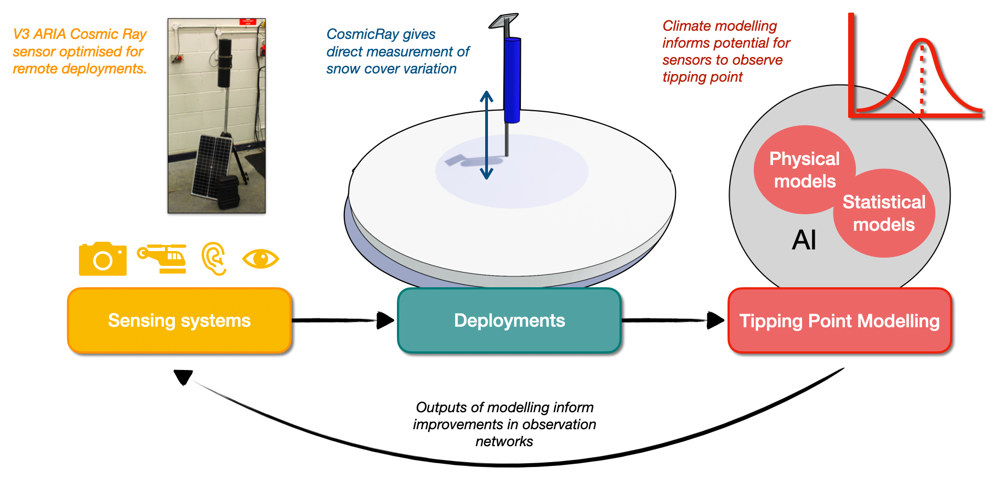

ARTICLE
What’s next: What CosmicRay and ARIA’s missions mean for the future of the Greenland Ice Sheet.
With CosmicRay preparing to provide up-to-date data and information on the ice sheet’s melting rates, it is crucial to understand the impact it will have and how it will increase our understanding of the ice sheets.
Understanding CosmicRay Data
The data and results that the sensors will collect will give information on melting rates, but they have the possibility to reveal much more, especially in the context of Greenland’s tipping point.
Melting data will allow for scientists to answer the following questions:
The possibility of improved data is incredibly useful for these points. The most paramount feature is there will be consistent readings, with data collected every day, allowing researchers to see what is happening every time there is expected melting and freezing. Capabilities like these give the sensors significant forecasting and monitoring power to do the following.
Linking with the wider ARIA FTP Program
With CosmicRay being under the Advanced Research & Invention Agency’s “Forecasting Tipping Points” program, they are working towards a common goal with many other researchers across the country to create early warning systems for Polar tipping points.

Key components of the ARIA Forecasting Tipping Points program showing how sensor data and deployments will be used to update models and optimise a future observation network. Figure adapted from the ARIA Forecasting Tipping Points programme thesis : Link (Diagram Credit: Matthew Rowe, Patrick Stowell)
The wider ARIA program partners are considering using technologies such as drones, underwater cables and observatories to monitor the changes in the ice sheet in many different ways. The overarching project has a focus on building a robust network of teams with their own innovative methods and equipment.
With its ability to spot rapid changes and keep the team updated on current melting rates, CosmicRay achieves consistent autonomous data collection and will combine with these other ARIA projects to create a strong work force.
Other Implications of CosmicRay
Helping to detect melting rates is not the only thing these sensors have been used for however, these sensors have an extensive history of being used in various industries, with agriculture being a critical one.
Due to their ability to detect moisture beneath the ground, cosmic ray neutron sensing can detect moisture levels in soil over large areas without having to dig up the soil. Applications like this are invaluable for monitoring levels of resources needed and how efficient current water systems are at distributing moisture. This method of detection helps to identify droughts before it is too late for both farmers and their crops, allowing them to manage their water supply to effectively fight against this possibility.
CosmicRay methods even expand to outside of Earth, Mars rovers use this technology to map potential water sources under the vast red soil, helping our space exploration journey.
Whilst not exactly the same, other neutron detecting systems impact out day to day lives as well,
in ways you may not have thought of:
The usefulness of using cosmic ray and neutron detectors cannot be understated. From such an abstract idea to having such a huge impact and being used in many contexts globally, they impact your life more than you may think.
Development of low-cost environmental modelling feeds back in many ways, it both improves our understanding of the world, but also allows for new applications, as other areas could pick it up with relative ease and lower cost to them. Their application to monitoring a tipping point only adds to the vast number of emerging processes where cosmic rays are utilised, and has massive potential to improve lives globally.